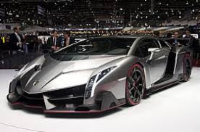

Supercarros é o termo utilizado para descrever
automóveis cujo desempenho e qualidade são muito superiores em
relação ao normal dos automóveis da sua época.
O desempenho de um supercarro excede frequentemente os níveis
dos automóveis de competições esportiva. Costumam utilizar materiais
pouco convencionais como fibra de carbono, Kevlar e ligas de alumínio,
magnésio, molibdénio ou titânio, para reduzir o peso e obter melhores
prestações. Por isso costumam ser muito mais dispendiosos que
um carro desportivo de altas prestações produzido em massa.
Os superdesportivos são produzidos em muito reduzida quantidade
e quase sempre sob encomenda, o que os faz destacar pela exclusividade
e luxo. Muitos são fabricados à mão. Há várias marcas de supercarros,
como a Pagani, a Koenigsegg, a McLaren ou a Bugatti e que são muito mais raros e
caros do que outros veículos que se encontram em circulação, como será
o caso da Ferrari, Lamborghini, Aston Martin ou Porsche.
HOME
McLaren